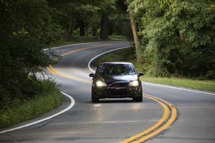

I have a huge passion for outdoor recreational motorsports. I love to modify, and tune import cars. I also enjoy snowmobiling in the great trails of NY and jetskiing.
I also participate in team and individual sports such as beach volleyball, track, mountain and road biking.
Overall, I am a very active person that takes pride in a variety of hobbies. Traits that explain my passion for outdoor recreational sports are competitivness, adventure, and the desire for better performance. I never jetski and snowmobile at the same place as I feel a need to explore new places that will continue to test and improve my skills. It is like creating a competition within myself. I am always looking for better performance within myself and my favorite recreation equipment.